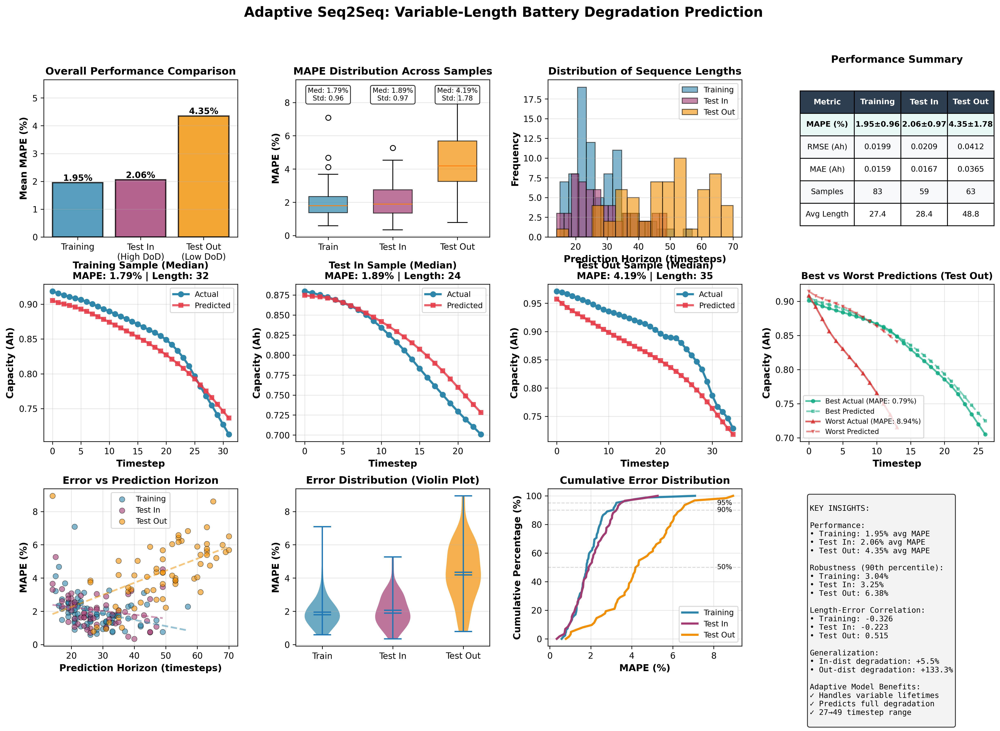
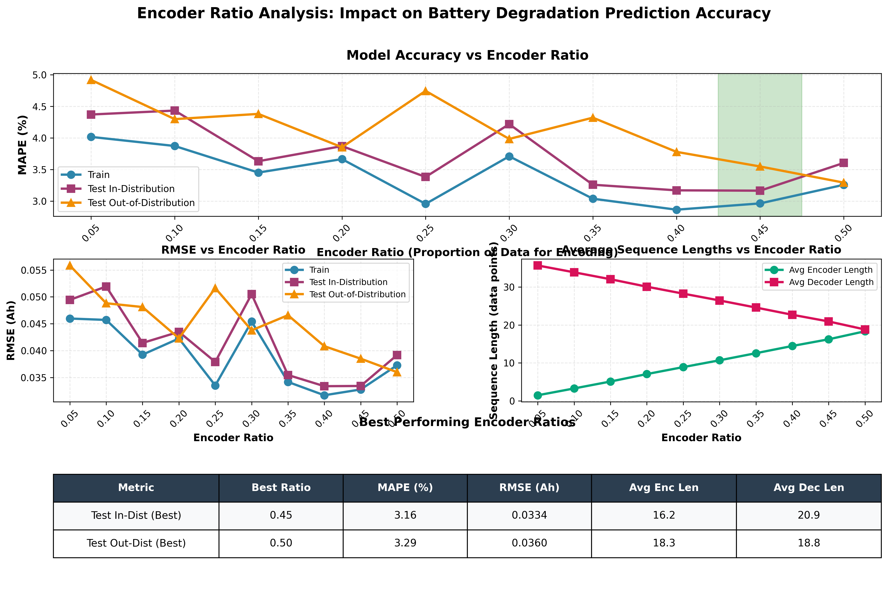

Research in physics-based modeling, machine learning, and computational methods
Developed a hybrid EIS model that couples a physics-based transmission-line SEI impedance formulation with a compact equivalent circuit model (ECM). The model extracts physically meaningful parameters — SEI thickness (LSEI), diffusion coefficient (DSEI), ionic conductivity (σSEI), CPE capacitance, and ohmic resistance — from experimental Nyquist spectra. A key contribution is the embedding of degradation-aware constraints into the Differential Evolution (DE) optimizer, enforcing that LSEI and R0 monotonically increase from beginning-of-life (BOL) to end-of-life (EOL), consistent with established electrochemical aging theory. A multi-SOC fitting strategy reduces free parameters from 6 to 2–3 per fit. Validated across 6 commercial Li-ion cells at multiple SOC levels, yielding 1.7% mean absolute percentage error over 117 EIS spectra. OAT sensitivity analysis quantifies the relative importance of each SEI parameter.
Collaborators: Jiawei Zhang, Prof. Ziyou Song — Electric Vehicle Center, University of Michigan
Translating the CyScat electromagnetic scattering simulation package from MATLAB to Julia and Python under Prof. Raj Rao Nadakuditi. CyScat computes S-matrices (scattering matrices) for periodic arrays of cylinders using the T-matrix multiple scattering method with Modified Shanks Transformation for convergence acceleration. The package supports dielectric and perfectly-conducting (PEC) cylinders, Floquet mode analysis, and cascading via the Redheffer star product.
Through this work, I gained understanding of wavefront optimization via singular value decomposition of scattering matrices: the first right singular vector of S11 gives the optimal wavefront to maximize reflection, and of S21 to maximize transmission (open eigenchannels). The video below shows a simulation of an optimized wavefront tunneling through an S-shaped PEC maze with ~99.9% transmission, compared to only ~8.5% for normal incidence.
Open eigenchannel wavefront routing through an S-shaped PEC maze: normal incidence (8.5% transmission) vs. optimal wavefront (99.9% transmission)
Developed sequence-to-sequence deep learning models for predicting NMC battery capacity degradation trajectories from early-life cycling data. The model takes the first ~30% of a cell's capacity-fade curve and predicts the complete remaining trajectory. Key innovations include:
Achieves 2–5% MAPE on held-out test sets with robust generalization across C-rates and depths of discharge. Evaluated on 225 NMC cells with separate in-distribution and out-of-distribution test sets.
Electric Vehicle Center, University of Michigan — Prof. Ziyou Song

Attention-enhanced adaptive Seq2Seq: performance comparison, sample predictions, error distributions, and model insights
Download Image (PNG)
Encoder ratio analysis: impact of encoder/decoder data split on MAPE, RMSE, and sequence lengths
Download Image (PNG)Created a benchmark audio dataset with 1M+ samples using multiple TTS models with paired real/fake audios. Trained an audio-language detection model that outperforms human listeners and achieves state-of-the-art performance. Eliminating linguistic cues forced the model to rely solely on acoustic artifacts, making it robust to content variation.
Carnegie Mellon University — Dr. Arun Balajee Vasudevan
Amazon ML Challenge 2023
FAISS-based product dimension prediction{kind=link}
{kind=link}